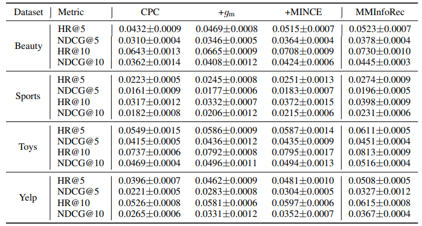
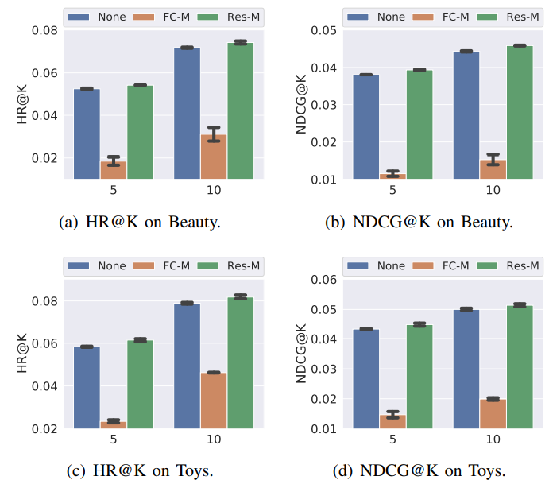

Abstract
目前大多数序列推荐模型将下一个item预测任务作为训练信号。对于这些方法，有两个至关重要的挑战 1）难以捕捉用户的长期偏好。2）监督信号过于稀疏而无法有效训练模型。因此作者提出了一个名为MMInfoRec,基于记忆增强的多实例对比预测编码方案的框架来克服这些挑战。对比预测编码（Contrastive Predictive Code CPC）作为序列和item的编码器（encoder）.记忆模块旨在增强CPC中的自回归预测，以实现灵活和整体上（general）的偏好编码表示,从而提高捕获长期偏好的能力。为了有效训练MMInfoRec,作者提出了一个新颖的多实例噪声对比估计损失（muti-instance noise constrastive estimation MINCE）.该损失通过使用多个正样本来有效利用mini-batch内的样本。作者提出的框架属于对比学习类型。然而，鉴于其对比训练任务与目标推荐任务很好地对齐，因此不需要进一步地微调步骤。通过对四个基准数据集的大量实验，MMInfoRec 可以胜过最先进的基线。
Method

Learning Framework
MMInfoRec的整体架构如图1所示。首先将序列中的所有item的id和attributes分别由两个嵌入层转换为密集特征向量。对于每一个item,它的特征由属性编码器 \(g_{enc}\) 编码为潜在表示 \(\boldsymbol z\)。时间聚合模块(Temporal aggegation) \(g_{ta}\) 将序列信息编码为\(\boldsymbol c_t\)。通过自回归预测模块\(g_{ap}\)，\(\boldsymbol c_t\) 可用于预测未来的潜在表示。
1）Embedding Layyer：通过两个emdedding 矩阵：an item embedding matrix \(\boldsymbol {Emb_i}\in \mathbb{R}^{\rvert \mathcal{I} \rvert \times d}\),an attribute embedding matrix \(\boldsymbol {Emb_A}\in \mathbb{R}^{\rvert \mathcal{A} \rvert \times d}\)。(其中 \(\rvert \mathcal{I} \rvert\) 为item的数量，\(\rvert \mathcal{A} \rvert\) 为数据集合中出现的item的属性的数量)将IDs和 attributes 转换为密集向量。 例如，物品 \(I_n\) 及其属性\(\{ a_1,a_2\}\),通过lookup操作获得向量: \(\mathbf x_n= \boldsymbol {Emb_i}(i_n)\),\(\boldsymbol a_1= \boldsymbol {Emb_A}(a_1)\),\(\boldsymbol a_2= \boldsymbol {Emb_A}(a_2)\)
2）Attribute Encoder :旨在将项目的所有信息（包括 ID 信息和属性信息）融合为潜在表示 $z $。 \[ \mathbf z =\it g_{enc}\left(\mathbf x,\left\{\boldsymbol a_*\right\}\right)\tag{1}\label{eq1}\] 其中 \(\mathbf x \in \mathbb{R}^{1\times d}\),\(\boldsymbol{a_*}\in\mathbb{R}^{1\times d}\),\(\mathbf z \in\mathbb{R}^{1\times d}\)。 对于函数\(\it g_{enc}\)的实现，简单的mean,或AutoInt,或item embedding到所有attribute embedding 的self attention 都适用于这个结构。作者使用的是Transformer
3）Temporal aggegation:时间聚合函数\(\it g_{ta}\)用于聚合在某个特定时间之前的item Temporal 信息,得到context vector。 \[ \mathbf c_t = \it g_{ta}(\mathbf z_1,\mathbf z_2,...,\mathbf z_t)\tag{2}\] 其中\(\mathbf c_t\in\mathbb{R}^{1\times d}\)。可选择GRU或Attention作为时间聚合函数。作者使用Transformer。同时，作者将学习到的位置编码层添加到 \(\it g_{ta}\) 的输入中。
4）Memory Module:增强模型的表示能力，作者设计了一个记忆模块，根据context vector计算每一步的预测输出。记忆模块中有一个带有b个内存条的内存库 \(\mathbf M\in\mathbb{R}^{b \times d}\) 内存寻址操作定义如下: \[\hat {\mathbf z}_{t+1} = \it g_m(\mathbf c_t) \] \[=Softmax(MLP(\mathbf c_t)) \cdot\mathbf M + \mathbf c_t \tag{3}\label{eq3}\] 残差旨在保留原始预测并改进训练中的梯度流。
5）Auto-regressive Prediction:对于多步预测任务，如果上下文被编码为向量 \(\mathbf c_t\) ,那么预测的潜在表示 \(\hat{\mathbf z}_{t+*}\) 预计与 \(\mathbf c_t\) 有很强的语义相似性。因此，我们引入自回归预测函数\(\it g_{ap}\) \[\mathbf c_{t+1}=\it g_{ap}(\hat{\mathbf z}_{t+1}),\ \ \hat{\mathbf z}_{t+2} = \it g_m(\mathbf c_{t+1}) \tag{4}\] 其中 \(\mathbf c_{t+1}\) 是时间步骤1到t+1的上下文摘要， \(\hat{\mathbf z}_{t+2}\) 是时间步骤 t + 2 的预测特征。类似于 Seq2Seq 预测风潜在表示以顺序方式一一预测。作者使用了GUR模型。
6）Recommendation:在MMInfoRec的验证和测试过程中，推荐是在序列表示 \(\mathbf c_t\) 和项目集中所有项目之间的得分排序下进行的。 分数是通过当前时间步长 t 的序列表示 \(\mathbf c_t\) 与项目集中所有项目的潜在表示 \(\mathbf{z}\) 之间的点积计算得出的。
Contrastive Loss
Noise Contrastive Estimation (NCE) 是一种分类目标，可以区分真实样本和噪声样本。NCE 损失可以直接应用于项目预测任务。 在 MMInfoRec 中，作者将此损失扩展到多实例变体，可以有效缓解训练信号稀疏的问题。
1）Vanilla NCE Loss：vanilla NCE 主要对潜在空间中的表示进行比较，以迫使预测表示 \(\hat {\mathbf z }\) 接近真实表示 \(\mathbf z\) \[\mathcal{L}_{NCE}=-\sum_t\left[log { e^{\left(\hat{\mathbf z}_t^T\cdot \mathbf z_t\right)/\tau}\over e^{\left(\hat{\mathbf z}_t^T\cdot \mathbf z_t\right)/\tau}+\sum_{*\in\mathcal{N}_i}e\left(\hat{\mathbf z}_t^T\cdot \mathbf z_*\right)}\right]\tag{5}\label{eq5}\] 其中 \(\tau\) 为温度参数，\(\mathcal{N}_i\) 是时间为t的item的负样本集。本质上 \(\mathcal{L}_{NCE}\) 是一个正样本对和其他所有负样本对之间的交叉熵损失
2）Negative Sampling within Batch:因为训练时需要负样本集，因此需要负样本集的采样过程。一般有两种抽样方法：memory bank and batch sampling。在 MMInfoRec 中，NCE 的计算在一个batch内进行，而不是在整个项目集中进行抽样，因为一个batch将包含足够的负样本。 在计算机视觉任务的 CPC 方法中，负样本可以从同一个特征图的通道中选择，也可以从同一批的其他特征图中选择。 类似地，在顺序推荐中，可以使用batch中其他物品的特征向量 \(\mathbf{z}\) 为每个物品i构造负样本集 \(\mathcal{N}_i\)。若 \(D\) 是train batch 中不同物品的数量,则 \(\rvert \mathcal{N}_i\rvert=D-1.\)
如图一右边所示：定义General negatives为同一batch中但不属于该序列的负样本，Temporal negatives为同一序列中的负样本，模型更难区分。因为这些item和正样本在一个序列中，更倾向于代表用户的过时和误导性的偏好。所以把它们作为负样本训练模型是非常重要的，能够使模型区分差异.
3）Multiple Instance Positive Sampling：对于预测的潜在表示 \(\hat{\bf z}_t\) 最自然的正样例对就是选择相应时间的真实潜在向量\((\hat{\bf z}_t,\bf z_t)\) 在本节，作者将这种正采样策略扩展到多实例方案。
将vanilla NCE 从单正样本扩展到语义正样本的多个实例，主要的难点是识别真实正样本的语义相关正样本。因为序列推荐通常将下一物item作为预测的标签，因此在NCE中一般很难像多个正样本那样找出语义相似的items.这种困难主要是由于基本无法定义序列的语义相似性，通常依赖于序列级别的最近邻计数。与计算机视觉研究领域的数据样本（例如图像和视频）不同，没有广泛适用的增强方法用于item的嵌入表示以获得语义正样本，也没有有意义的标签以监督学习的方式挖掘语义正样本。
为了解决语义相似正样本这一难题，MMInfoRec中提出了一种基于Droupout的正样本挖掘策略。如公式 \(\eqref{eq1}\) 所描述的,item 由 \(\it g_{enc}\) 编码为encoder向量。如果在 \(\it g_{enc}\) 中存在Droupout操作，通过对同一个item设置不同的Droupout masks，就能得到这个item的一组 不同但语义相似的encoder向量。假定由 \(q\) 个不同的Droupout 函数，当这些函数在同一个item i 上操作时，得到的一组不同的隐向量表示为：\(\mathcal P_i=\{\bf z_i^1,\bf z_i^2,\cdots,\bf z_i^q, \}\) 这些语义正样本在图1中表示为 Sem.Pos. 对batch 中的每一个item i 都生成一个这样的正语义样本集 \(\mathcal P_i\) ,因此multi-instance NCE (MINCE) loss 定义如下: \[\mathcal{L}_{MINCE}=-\sum_t\left[log { \sum_{*\in\mathcal{P}_i}e^{\left(\hat{\mathbf z}_t^T\cdot \mathbf z_*\right)/\tau}\over \sum_{*\in\mathcal{P}_i}e^{\left(\hat{\mathbf z}_t^T\cdot \mathbf z_*\right)/\tau}+\sum_{*\in\mathcal{N}_i}e\left(\hat{\mathbf z}_t^T\cdot \mathbf z_*\right)}\right]\tag{6}\] \(\mathcal{N}_i\) 是时间步骤为t的item的负样本集，它包含等式\(\eqref{eq5}\)负样本集中每个样本的q个变体。因此等式（6）中的负样本集合的大小为\(q(D-1)\).
Experiment
Setup
1）Dataset
- Amazon Beauty, Sports, and Toys:将商品的细粒度分类和品牌作为属性。
- Yelp3：实验使用2019年1月1日之后的交易记录。将业务类别作为属性。2）Preprocessing
对于所有数据集，作者将来自同一用户的所有交互记录视为一个序列，根据交互时间排序。过滤出现次数少于5次的item以及长度小于5的序列。序列长度大于50的仅保留最近的50个交互记录。序列中的倒数第二项用于验证，最后一项用于测试，其余item用于训练。

3）Hyper-Parameter embedding size 设置为64，MMInfoRec中所有的线性映射函数都具有相同的隐藏大小。Transformer中层数设置为1，head设置为2。\(\it g_{ta}\) 的输入和 \(\it g_{ta}\) 内部的Transforme模块都使用ratio为0.5的Dropout函数，以缓解过拟合。batch size设置为256。采用学习率分别为{0.0003，0.001，0.003,0.01,0.003}的Adam作为优化器。内存槽数量 \(b\) 从{5，10，32，64，128，256}中选择。预测步数从 {1, 2, 3, 4} 中选择。用于多实例的Dropout functions数量从{1，2，3，4}选择。温度参数从{0.1,0.3,0.6,1.3}。作者使用了 \(\mathcal{l}_2\) 正则项用于训练。权重从{0，0.1，0.01，0.001，0.0001，0.00001}中选择。
Overall Performance

Ablation Study

Memory model

- None: 没有使用memory module
- FC-M:在等式 \(\eqref{eq3}\) 中去掉额外的原始上下文向量 \(\bf c_t\) 。
- Res_M: 使用等式 \(\eqref{eq3}\) 中默认的带有残差结构的memory module
此外，作者将学习到的memory的范数进行了可视化。

可以发现，学习到的内存库是一个稀疏矩阵。
MINCE in Sequential Recommendation

Parameter Sensitivity
Impact of b:

可以看出内存插槽的数量对整体性能影响不大。值得注意的是，根据图 3 中内存条的可视化结果，只有少量内存插槽对模型有贡献。 这可以解释，虽然整体内存插槽的数量变化很大，但性能仍然非常稳定。
Impact of \(\tau\):

从图中发现 \(\tau\) 需要设置在一个合适的范围内才能达到合理的性能。如Sport和Yelp数据集，当 \(\tau\) 太小时，对数值变得更接近确定性分布，这无法提供足够的训练信号来训练模型。
Impact of number of prediction step:
本实验评估预测步数的影响，该参数控制自回归预测（auto-regressive prediction） \(\it g_{ap}\) 推出的步数以及将多少未来信息包含在训练中。